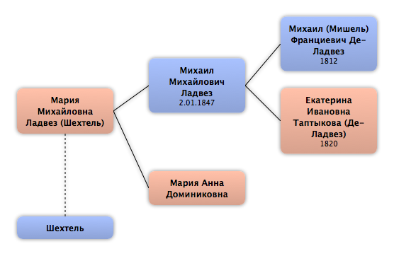

Домой
Домой
 Люди
Люди
 Семьи
Семьи
 Источники
Источники
 Диаграммы
Диаграммы
 Статистика
Статистика
Мария Михайловна Ладвез

Контекст

Дополнительные имена
| Тип | Имя |
|---|---|
| Фамилия в браке | Шехтель |
Родители
| Отец | Дата рождения | Мать | Дата рождения |
|---|---|---|---|
 Михаил Михайлович Ладвез Михаил Михайлович Ладвез
|
2.01.1847 |
Мария Анна Доминиковна
|
Родители и дети
| Партнёры | Дата рождения | Дети |
|---|---|---|
|
Шехтель
|
События
Факты
Медиа
Примечание
Источники
Родство
| Имя | Степень родства | Дата рождения | Место рождения | Дата смерти | Место смерти |
|---|---|---|---|---|---|
| Партнёров | |||||
| Партнёр или муж | |||||
| Братья и сёстры | |||||
| Приёмная сестра | |||||
| Брат | 23.09.1880 | ||||
| Брат | 23.2.1888 | Москва, Россия | 05.08.1929 | Москва, СССР | |
| Родителей | |||||
| Мать | |||||
| Отец | 2.01.1847 | Москва, Россия | |||
| Дедушки и бабушки | |||||
| Дедушка | 1812 | Москва, Россия | 1850 | Рязань, Россия | |
| Бабушка | 1820 | 1886 | Рязань, Россия | ||
| Прадедушка и прабабушка | |||||
| Прадедушка | 24.12.1756 | Франция | 2.09.1846 | Москва, Россия | |
| Прабабушка | 6.04.1784 | 3.02.1845 | Москва, Россия | ||
| Прадедушка | 1786 | 30.04.1836 | |||
| Прабабушка | 1793 | ||||
| Пра-прадедушка и пра-прабабушка | |||||
| Пра-прадедушка | |||||
| Шурины и невестки | |||||
| Невестка | |||||
| Невестка | 1875 | Москва, Россия | |||
| Племянники и племянницы | |||||
| Племянница | 23.10.1899 | Москва, Россия | |||
| Племянник | 21.07.1900 | Москва, Россия | 1947 | ||
| Племянница | 22.09.1902 | Тифлис (Тбилиси), Грузия | |||
| Племянница | 03.12.1905 | Москва, Россия | |||
| Племянница | 10.04.1907 | Двинск, Россия | |||
| Племянница | 16.02.1910 | Санкт-Петербург, Россия | |||
| Племянница | 23.03.1911 | Москва, Россия | |||
| Племянник | 10.05.1912 | Москва, Россия | |||
| Внучатые племянники и внучатые племянницы | |||||
| Внучатый племянник | |||||
| Внучатая племянница | |||||
| Внучатый племянник | |||||
| Внучатая племянница | |||||
| Внучатая племянница | |||||
| Внучатый племянник | 22.08.1926 | Хабаровск, СССР | 08.05.2006 | Санкт-Петербург, Россия | |
| Правнучатые племянники и правнучатые племянницы | |||||
| Правнучатый племянник | |||||
| Правнучатый племянник | |||||
| Правнучатая племянница | 19.03.1963 | Ленинград, СССР | |||
| Правнучатый племянник | 22.02.1965 | Ленинград, СССР | |||
| Пра-правнучатые племянники и пра-правнучатые племянницы | |||||
| Пра-правнучатый племянник | 01.09.1988 | Ленинград, СССР | |||
| Пра-правнучатый племянник | 19.11.1991 | Санкт-Петербург, Россия | |||
| Пра-правнучатый племянник | 15.07.1995 | Санкт-Петербург, Россия | |||
| Двоюродные дедушки и двоюродные бабушки | |||||
| Двоюродный дедушка | 14.10.1807 | Москва, Россия | 26.06.1857 | Москва, Россия | |
| Двоюродный дедушка | 9.7.1813 | ||||
| Двоюродный дедушка | 18.09.1817 | Москва, Россия | 29.10.1854 | Санкт-Петербург, Россия | |
| Двоюродный дедушка | 1.02.1819 | Рязань, Россия | |||
| Двоюродная бабушка | 1822 | ||||
| Двоюродная бабушка | 15.11.1826 | Пущино, Московская обл, Россия | |||
| Двоюродный дедушка | 5.07.1828 | Пущино, Московская обл, Россия | |||
| Двоюродная бабушка | 18.11.1829 | Пущино, Московская обл, Россия | |||
| Двоюродная бабушка | 13.11.1830 | Пущино, Московская обл, Россия | |||
| Дальние родственники | |||||
| Троюродный брат | 30.01.1870 | ||||
| Троюродный брат | 19.11.1871 | Москва, Россия | 25.04.1921 | Челябинск, Россия | |
| Другие родственники | |||||
| Двоюродный дядя | 9.03.1844 | 23.09.1887 | |||
| Двоюродная тётя | 24.07.1845 | ||||
| Двоюродная тётя | 2.09.1846 | ||||
| Двоюродная тётя | 27.09.1849 | ||||
| Двоюродный дядя | 28.09.1849 | Москва, Россия | |||
| Троюродный племянник | 31.12.1895 | г. Сороки Бессарабской губернии, Россия | 27.10.1937 | Оренб. обл, СССР | |
| Троюродный племянник | 18.06.1900 | ||||
| Троюродный племянник | 16.07.1900 | ||||
| Троюродный племянник | 1901 | ||||
| Троюродная племянница | 1905 | ||||